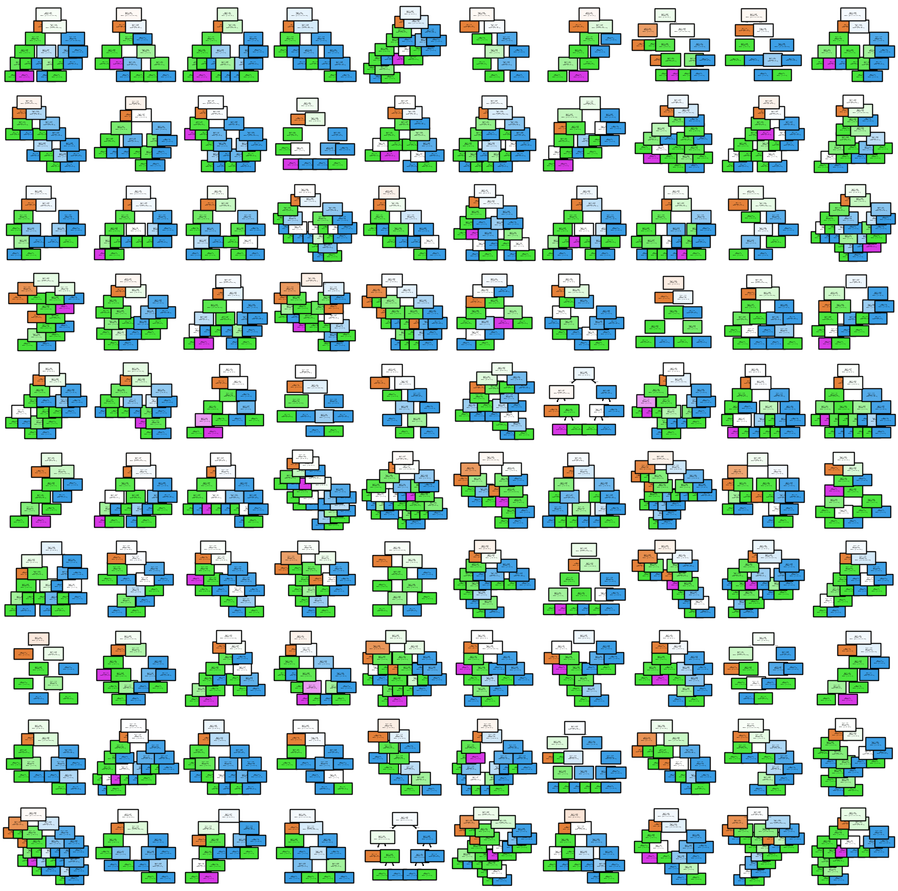

Safe Random Forest Notebook#
A Quick Start Guide to implementing Safer Random Forests#
Lets start by making some data with one disclosive case#
We’ll do this by adding an example to the iris data and give it a new class to make things really obvious.
The same risks exist for more complex data sets but everyone knows iris
[1]:
import os
import numpy as np
from sklearn import datasets
iris = datasets.load_iris()
X = iris.data
y = iris.target
# print the max and min values in each feature to help hand-craft the disclosive point
for feature in range(4):
print(f"feature {feature} min {np.min(X[:,feature])}, min {np.max(X[:,feature])}")
# now add a single disclosve point with features [7,2,4.5,1] and label 3
X = np.vstack([X, (7, 2.0, 4.5, 1)])
y = np.append(y, 4)
feature 0 min 4.3, min 7.9
feature 1 min 2.0, min 4.4
feature 2 min 1.0, min 6.9
feature 3 min 0.1, min 2.5
Some basic Libraries for visualization#
[2]:
import matplotlib.pyplot as plt
from sklearn.tree import plot_tree
Defining a new class SafeRandomForestClassifier¶#
-Don’t forget to import the SafeModel classes.
[3]:
from sacroml.safemodel.classifiers import SafeRandomForestClassifier
[4]:
safeRFModel = SafeRandomForestClassifier(n_estimators=100) # (criterion="entropy")
safeRFModel.fit(X, y)
print(f"Training set accuracy in this safe case is {safeRFModel.score(X,y)}")
fig, ax = plt.subplots(10, 10, figsize=(15, 15))
for row in range(10):
for column in range(10):
whichTree = 10 * row + column
treeRowCol = safeRFModel.estimators_[whichTree]
_ = plot_tree(treeRowCol, filled=True, ax=ax[row][column], fontsize=1)
Preliminary checks: WARNING: model parameters may present a disclosure risk:
- parameter min_samples_leaf = 1 identified as less than the recommended min value of 5.
Training set accuracy in this safe case is 1.0

Using the save and reporting functionality¶#
[5]:
safeRFModel.save(name="testSaveRF.pkl")
safeRFModel.preliminary_check()
safeRFModel.request_release(path="testSaveRF", ext="pkl")
Preliminary checks: WARNING: model parameters may present a disclosure risk:
- parameter min_samples_leaf = 1 identified as less than the recommended min value of 5.
The checkfile reports any warnings and recomendations in JSON format#
[6]:
target_yaml = os.path.normpath("testSaveRF/target.yaml")
with open(target_yaml) as f:
print(f.read())
dataset_name: ''
dataset_module_path: ''
features: {}
generalisation_error: .nan
safemodel:
- researcher: unknown
model_type: RandomForestClassifier
details: 'WARNING: model parameters may present a disclosure risk:
- parameter min_samples_leaf = 1 identified as less than the recommended min value
of 5.'
k_anonymity: '1'
recommendation: Do not allow release
reason: 'WARNING: model parameters may present a disclosure risk:
- parameter min_samples_leaf = 1 identified as less than the recommended min value
of 5.'
timestamp: '2025-12-02 21:12:52'
model_type: SklearnModel
model_name: SafeRandomForestClassifier
model_params:
n_estimators: 100
bootstrap: true
oob_score: false
n_jobs: null
random_state: null
verbose: 0
warm_start: false
class_weight: null
max_samples: null
criterion: gini
max_depth: null
min_samples_split: 2
min_samples_leaf: 1
min_weight_fraction_leaf: 0.0
max_features: sqrt
max_leaf_nodes: null
min_impurity_decrease: 0.0
ccp_alpha: 0.0
model_path: model.pkl
X_train_path: ''
y_train_path: ''
X_test_path: ''
y_test_path: ''
X_train_orig_path: ''
y_train_orig_path: ''
X_test_orig_path: ''
y_test_orig_path: ''
proba_train_path: ''
proba_test_path: ''
indices_train_path: ''
indices_test_path: ''
Putting it all together#
-Don’t forget to import the SafeModel classes.
[7]:
from sacroml.safemodel.classifiers import SafeRandomForestClassifier
safeRFModel = SafeRandomForestClassifier(n_estimators=100) # (criterion="entropy")
safeRFModel.fit(X, y)
safeRFModel.save(name="testSaveRF.pkl")
safeRFModel.preliminary_check()
safeRFModel.request_release(path="testSaveRF", ext="pkl")
Preliminary checks: WARNING: model parameters may present a disclosure risk:
- parameter min_samples_leaf = 1 identified as less than the recommended min value of 5.
Preliminary checks: WARNING: model parameters may present a disclosure risk:
- parameter min_samples_leaf = 1 identified as less than the recommended min value of 5.
Examine the checkfile contents#
[8]:
target_yaml = os.path.normpath("testSaveRF/target.yaml")
with open(target_yaml) as f:
print(f.read())
dataset_name: ''
dataset_module_path: ''
features: {}
generalisation_error: .nan
safemodel:
- researcher: unknown
model_type: RandomForestClassifier
details: 'WARNING: model parameters may present a disclosure risk:
- parameter min_samples_leaf = 1 identified as less than the recommended min value
of 5.'
k_anonymity: '1'
recommendation: Do not allow release
reason: 'WARNING: model parameters may present a disclosure risk:
- parameter min_samples_leaf = 1 identified as less than the recommended min value
of 5.'
timestamp: '2025-12-02 21:12:52'
model_type: SklearnModel
model_name: SafeRandomForestClassifier
model_params:
n_estimators: 100
bootstrap: true
oob_score: false
n_jobs: null
random_state: null
verbose: 0
warm_start: false
class_weight: null
max_samples: null
criterion: gini
max_depth: null
min_samples_split: 2
min_samples_leaf: 1
min_weight_fraction_leaf: 0.0
max_features: sqrt
max_leaf_nodes: null
min_impurity_decrease: 0.0
ccp_alpha: 0.0
model_path: model.pkl
X_train_path: ''
y_train_path: ''
X_test_path: ''
y_test_path: ''
X_train_orig_path: ''
y_train_orig_path: ''
X_test_orig_path: ''
y_test_orig_path: ''
proba_train_path: ''
proba_test_path: ''
indices_train_path: ''
indices_test_path: ''
[ ]: